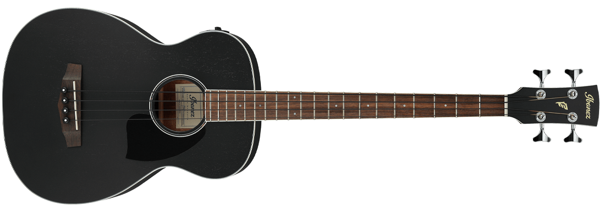
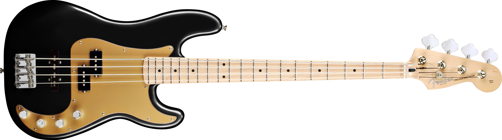

Invention of the Bass Guitar
The first Electric Bass Guitar
The first electric bass guitar was invented by Leo Fender and marketed in the United States at the beginning of the 1950s. This model became the popular and commercialized version of the electric bass guitar that became widely used in 20th-century music.
Evolution of the Bass Guitar
The bass guitar became more popularized by Leo Fender and it started to have a significant impact on pop culture and music. One of the first individuals to perform with a bass guitar was a jazz artist named Monk Montgomery in the late 1950s. In 1961, the 4001 model was released by Rickenbacker. This is the famous electric bass guitar that was used by Paul McCartney, bass player of The Beatles.
The bass guitar continued to transform and take shape and became more widely recognized by bands in the 1970s through to the 90s. Jazz and rock bands everywhere were trading in their traditional upright bass and going electric. This shift was happening in almost every genre.
Going electric was a movement that was fueled by the creation of the electric bass guitar. Not only was the sound more appealing for modern-day music, but it was also easier to transport and had a larger tone variety compared to the double bassist.